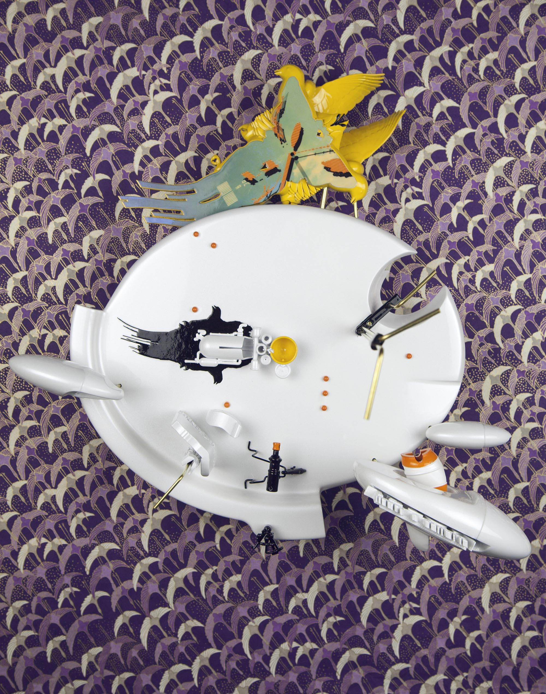
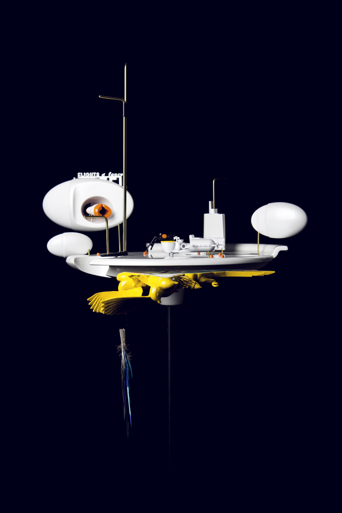
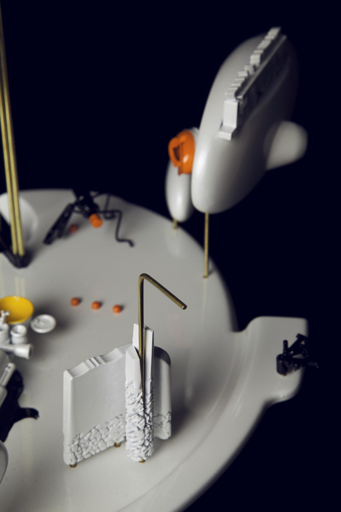
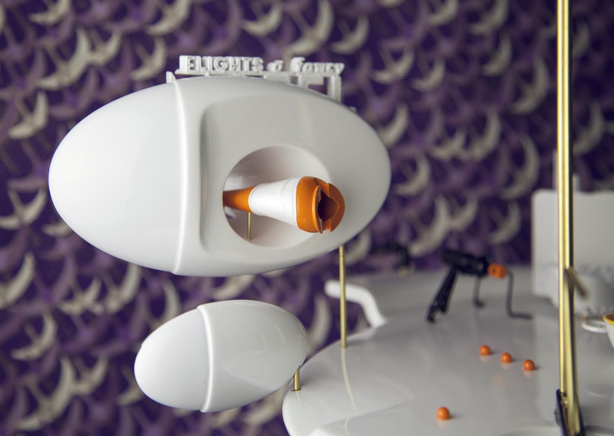
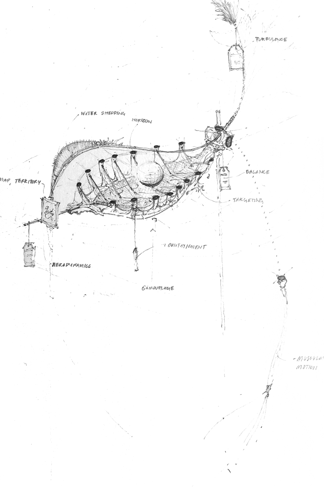
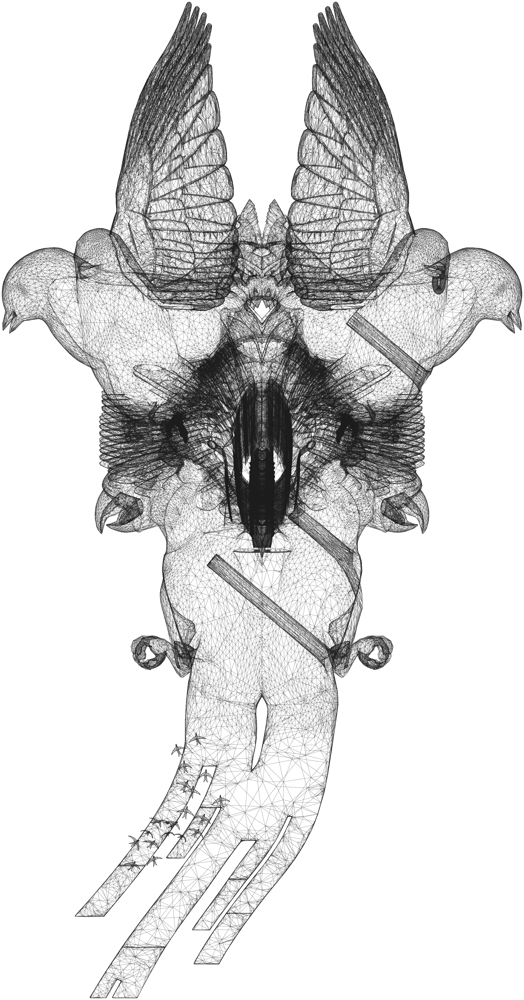

The Flights O' Fancy Motel
13 Ways of Looking at a Birdhouse
(Click images to zoom. Click circle to return to top.)
An elliptical ground to measure and collect.
13 Ways of Looking at a Birdhouse
(Click images to zoom. Click circle to return to top.)
An elliptical ground to measure and collect.

Three abstracted clouds in pearl and arctic white, branded.
One rug approximating the map of the landing strip, tactile.
A water table / public baths complex, canary yellow inside.
One rug approximating the map of the landing strip, tactile.
A water table / public baths complex, canary yellow inside.

Three hedges that rove and consume the other elements.
Three perches and one perch-holder.
Three perches and one perch-holder.

One sign fully visible from the rear.
A windsock striped Dayglo orange and white, cleft lip.
A windsock striped Dayglo orange and white, cleft lip.


A landing strip with a birded underbelly and indications of shadowy runway markings.


And four ways redacted.
